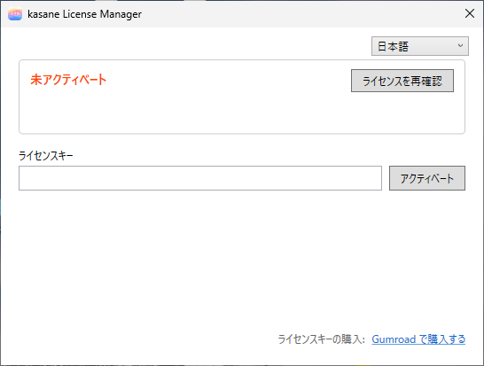
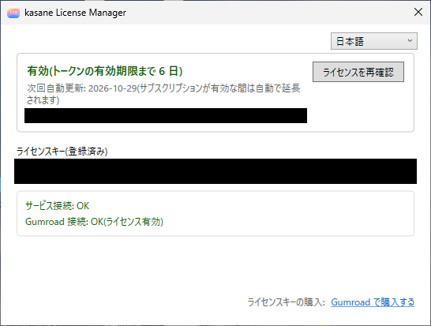
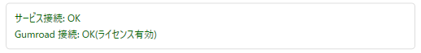
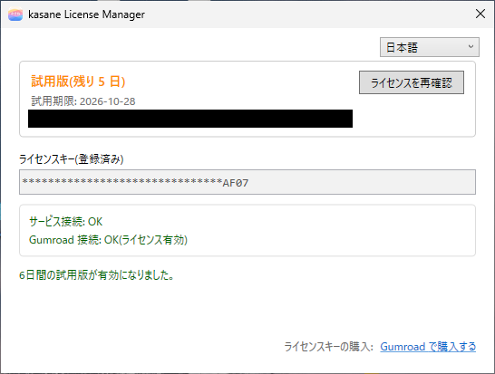
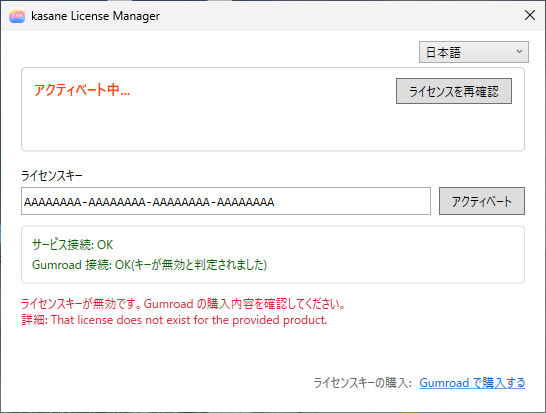

3. License Activation
kasane comes as a Gumroad subscription edition (Subscription) and a one-time purchase edition (Pro). They handle the license key differently, so this chapter covers both.
You can tell which edition is installed from the name shown in Windows "Installed apps" ("kasane Subscription" or "kasane Pro"). Or, if the menu you get by right-clicking the tray icon has no License item, it is the Pro edition.
| Subscription edition | Pro edition | |
|---|---|---|
| When you enter the license key | After installation, in License Manager | During installation |
| Checking the key | The license service asks the license server about every 24 hours | Asked just once, at installation |
| Cancellation and expiry | When the subscription becomes invalid, remapping stops | Does not expire |
| License Manager and the license service | Installed | Not installed |
| "License" in the tray | Present | Absent |
The Pro edition does not need an internet connection once installation is done.
Subscription edition
kasane provides its features according to your Gumroad subscription. After installation, you enter the license key in License Manager and activate it.
Opening License Manager
- It opens automatically, just once, when you sign in after the restart that follows installation.
- To open it later, choose kasane License Manager in the
appletfolder of the Start menu, or right-click the tray icon and choose License.
In the list at the top right, you can choose the display language, Japanese or English.
Entering the license key
You can find the license key in the email from your Gumroad purchase, or in your Gumroad library.

- Paste or type the key in the License key box.
- Press Activate.
- When it succeeds, the key box changes to a read-only display (the key with its middle hidden) and the status becomes "Active".

If you have not purchased a license, you can open the purchase page from the Buy on Gumroad link on the screen.
After activation, restart once more, or reconnect the keyboard, and remapping becomes available.
Reading the screen
| Item | Contents |
|---|---|
| Status | "Active (token valid for 6 more day(s))", "Trial (valid for 5 more day(s))", "Not activated", "Activating...", and so on |
| Next automatic renewal, Trial expires | For a subscription, the date of the next automatic check. For the trial, the date it expires |
| User | The email address registered at purchase |
| Re-check license | Asks the license server and gets the status again |
| License key (registered) | The registered key. The middle is hidden and only the last 4 characters are shown |
| Connection diagnostics | "Service connection: OK", "License server: OK (license valid)", and so on. Shown after activation or a re-check |

About every 24 hours, the license service connects to the license server (run by Applet LLC) and checks that the subscription is active. The license server returns the result it confirmed with Gumroad. Only the license key and a PC identifier are sent, and the license server neither stores nor logs them. It uses the result of the latest check, so you can keep using kasane offline for up to 7 days even if you cannot connect to the network.
The trial
When you enter a trial license key, you can use kasane as a trial for 6 days. The screen shows "Trial (valid for 5 more day(s))" and the trial expiry date, and displays "Your 6-day trial has been activated." When the trial ends, remapping can no longer be used.
The trial is established by matching against Gumroad's free trial product.

When the license becomes invalid
When the subscription becomes invalid, the layer remapping features can no longer be used. Basic keyboard input keeps working as usual.
When an error appears
The red message on the screen tells you the cause.
| Kind of message | Cause and fix |
|---|---|
| "The license key is invalid. Please confirm your purchase on Gumroad." | You mistyped the key, or it is a key for another product. Check the license key in your Gumroad library. The screen also shows the details Gumroad returned (for example, That license does not exist for the provided product.). The status box may then keep showing "Activating..." |
| Network, timeout | You cannot connect to the internet. Check your connection and press Re-check license |
| Server error, parse error | There may be a temporary problem on the license server or at Gumroad. Try again after a while |
| Service not running | The license service (kasaneLicenseSvc) is not running. Restart, or start it in the Windows Services screen |

When you cannot connect to the license server
Check that your company network or security software is not blocking communication (HTTPS, port 443) to these destinations.
| Edition | Destination | When it communicates |
|---|---|---|
| Subscription | https://kasane-license.applet-llc.workers.dev |
At activation, and in the check about every 24 hours |
| Pro | https://api.gumroad.com/v2/licenses/verify |
At installation (just once) |
With the Subscription edition, even if communication stops after activation, you can keep using kasane for up to 7 days.
The logs are debug.log and gui-debug.log in %ProgramData%\kbdlayer-license.
Pro edition
You can find the Pro license key in your Gumroad purchase email or in your Gumroad library. When you enter it during installation, the installer asks Gumroad, and only a valid key lets you go on. If the key is invalid, nothing is installed.
Entering the key
When you run Install-kasane-pro.exe, the first screen has a box for the key. Paste the key and press Install. You can also paste into this box with right-click.
If you run the .msi directly, the key entry page appears after the settings file import page. Right-click does not work on this page, so paste with Ctrl+V on the keyboard.
In a silent installation, pass it with LICENSEKEY (see "Silent installation" in 1. Installation).
When the key could not be confirmed
If you started from Install-kasane-pro.exe, the reason is shown on the screen. When the check fails, installation is cancelled and the PC is not changed.
| What the screen says | Cause and fix |
|---|---|
| The license key is invalid | You mistyped the key, or it is a key for another product. Check the license key in your Gumroad library. A key that was refunded or charged back also shows this |
| The key could not be confirmed because the internet is unavailable | Check your connection and run it again. If you ran the .msi directly, this reason is not shown and only error 1722 appears (see "Causes of error 1722" in 1. Installation) |
| The usage limit has been exceeded | A single key can be confirmed up to 100 times. If you exceed the limit, contact Gumroad support |
The detailed progress is recorded in C:\Windows\Temp\kasane-pro-activator.log.
When you install again
When you reinstall the Pro edition, you enter the key again. Each check adds one to the usage count of that key. An overwrite installation of a newer version does not need the key.